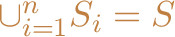

Next: Branch and Cut Up: Technical Details Previous: Technical Details Contents
Branch and bound is the broad class of algorithms from which branch, cut, and price is descended. A branch and bound algorithm uses a divide and conquer strategy to partition the solution space into subproblems and then optimizes individually over each subproblem. For instance, let be the set of solutions to a given problem, and let be a vector of costs associated with members of S. Suppose we wish to determine a least cost member of S and we are given , a “good” solution determined heuristically. Using branch and bound, we initially examine the entire solution space . In the processing or bounding phase, we relax the problem. In so doing, we admit solutions that are not in the feasible set . Solving this relaxation yields a lower bound on the value of an optimal solution. If the solution to this relaxation is a member of or has cost equal to , then we are done—either the new solution or , respectively, is optimal. Otherwise, we identify subsets of , , such that . Each of these subsets is called a subproblem; are sometimes called the children of . We add the children of to the list of candidate subproblems (those which need processing). This is called branching.
To continue the algorithm, we select one of the candidate subproblems and process it. There are four possible results. If we find a feasible solution better than , then we replace with the new solution and continue. We may also find that the subproblem has no solutions, in which case we discard, or prune it. Otherwise, we compare the lower bound to our global upper bound. If it is greater than or equal to our current upper bound, then we may again prune the subproblem. Finally, if we cannot prune the subproblem, we are forced to branch and add the children of this subproblem to the list of active candidates. We continue in this way until the list of active subproblems is empty, at which point our current best solution is the optimal one.